I have offended
God and mankind because my work did not
reach the quality it should have (Da Vinci's dying words)
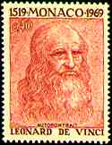 |
Leonardo DA VINCI, (b. 1452,
Vinci, It. - d. May 2, 1519, Cloux, Fr.), Italian painter, draftsman, sculptor, architect, and
engineer whose genius, perhaps more than that of any other figure, epitomized the
Renaissance humanist ideal. His Last Supper (1495-97) and Mona Lisa (1503-06) are among
the most widely popular and influential paintings of the Renaissance. [Encyclopaedia
Britannica, 1994] |
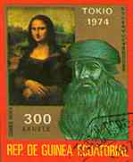 |
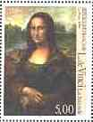 |
Portrait of Mona
Lisa (1479-1528), also known as La Gioconda, exhibited by Musée du
Louvre, Paris. The stamp on the left was issued in 1999 by France as a
part of a souvenir sheet of three stamps, on the occasion of the Philexfrance
99 Stamp Exhibition. The stamps on the right was issued by the Irish post
in 2000, as part of the sheet "The Arts. Celebrating the Millennium". |
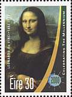 |
Mona Lisa was Leonardo da Vinci's
favorite painting. Many theories have been advanced regarding the meaning of the enigmatic smile on the woman's face and the identity of the sitter.
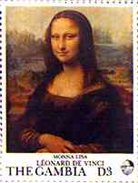
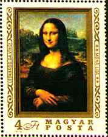
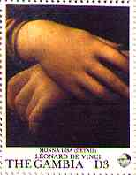 |
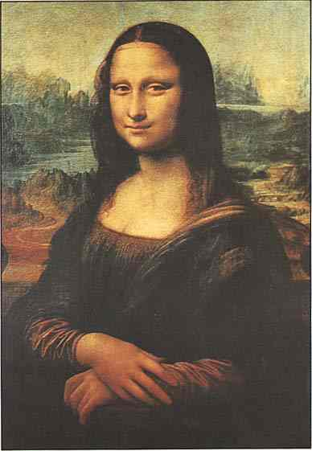
|
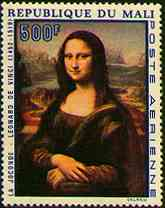
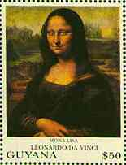
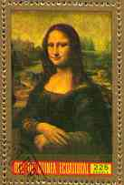 |
La Gioconda, Oil on wood, 77 x 53 cm
(30 x 20 7/8 in). 1503-1506. Louvre. Paris.
|
This Leonardo's most famous work is as well known for its mastery of technical innovations as for the mysteriousness of its legendary smiling subject. This work is a consummate example of two
techniques - sfumato and chiaroscuro - of which Leonardo was one of the first great masters. Sfumato is characterized by subtle, almost infinitesimal transitions between
color areas, creating a delicately atmospheric haze or smoky effect; it is especially evident in the delicate gauzy robes worn by the sitter and in her enigmatic smile.
 |
The first
reproduction of the Mona Lisa painting appeared on a West Germany stamp (on
the left), issued in 1952, and commemorating
the 500th birth anniversary of Leonardo da Vinci. The stamps on the right
was issued by the Bulgarian P.A. in 1980 as part of a souvenir sheet. |
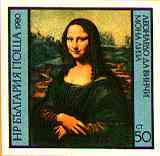
|
Chiaroscuro is the technique of
modeling and defining forms through contrasts of light and shadow; the sensitive hands of the sitter are portrayed with a luminous modulation of light and shade, while
color contrast is used only sparingly.
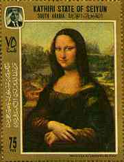 |
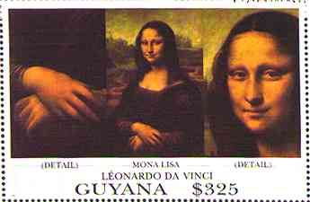 |
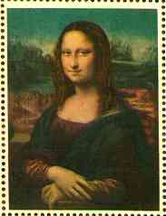 |
An especially notable characteristic of Leonardo's paintings is his
landscape backgrounds, into which he was among the first to introduce
atmospheric perspective. The chief masters of the High Renaissance
in Florence, including Raphael,
Andrea del Sarto, and Fra Bartolommeo, all learned from Leonardo;
he completely transformed the school of Milan; and at Parma, Correggio's
artistic development was given direction by Leonardo's work. (After
Microsoft Encarta 1996)
Link: Da Vinci and Vermeer
Links to other Italian artists featured on this site:
Davaar local issue stamp thanks to Rodney, Australia, RCSD newsgroup
Background:
Leonardo da Vinci's cartoon "The Virgin and Child with
St. Anne and St. John the Baptist".
|
|
|
Revised:
07/10/09.
Copyright © 1997 - 2009 by Victor Manta, Switzerland.
All rights reserved in
all countries. |

Click the
above image to visit the site
|
|
| |